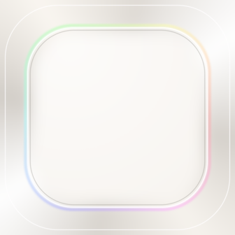

Hao (Eric) Nguyen
Business analyst moving into product ownership · Based in Singapore and Saigon
Summary
Business analyst on systems that move money: award disbursements for a polytechnic's financial aid module, and AI monitoring for NETS' SGD MEPS+ (RTGS) settlement transactions. I work from stakeholder workshops through to acceptance, and I build my own products with AI tools.
Passionate about building user-centric products that deliver delight and solve real problems. I use metrics and real data to drive decisions, and I work across teams and roles to get things shipped.
Skills
- Requirements workshops and FSDs
- User stories, backlog and sprint planning
- UAT, defect tracking, data validation
- Payments, settlement, disbursements
- Stakeholder management
- Agile / Scrum
- AI tools: Claude, Cursor, Lovable
- SwiftUI, React Native, Git, PostHog
- User flows in Figma
- English (fluent), Vietnamese (native)
Experience
Financial aid module for a Singapore polytechnic
- Specified the award disbursement flow end to end: award transactions, accounting entries and fund transfers to students.
- Defined award transaction reports so finance totals match the underlying transactions.
- Validated transactions, transfers and reports in UAT, and tracked defects to resolution.
- Turned requirements into a sprint backlog of user stories.
- Managed the eligibility criteria backlog across the Financial Aid and Edusave schemes, and led the client through phasing the remaining criteria into Phase 2a and 2b.
Smart Monitoring MVP
- Delivered a Smart Monitoring MVP with small teams of developers and data scientists.
- Scoped two AI/ML use cases for SGD MEPS+ (RTGS) transactions, liquidity projection and transaction anomaly detection, and narrowed anomalies to the highest-priority types.
- Led requirements workshops with the client's product strategy and engineering stakeholders.
- Kept 34 requirements linked to the FSD by ID, broken into 68 user stories and 36 UAT test cases.
Ranked 1st in the November 2025 trainee cohort.
Products

A private daily video journal. Record a 2 or 3 second snip; each day stacks into a reel. Local-first, no feed. SwiftUI, 898 commits.

Keeps a Mac muted until you allow sound, and re-mutes when headphones disconnect. Swift, Core Audio.
A brain dump journal. Write 500 words in one sitting: no backspace, no editing. SwiftUI, widgets.
Also built: EarlyBird (iOS alarm with a streak) · ENotes (Mac meeting recorder)
GitHub
2,124 commits on 116 days in the last 12 months, across 17 repositories. View profile →
Education
Minor in Business of Entertainment Industries. Gallatin Merit Scholarship, Drexel's Dean Scholarship. TOEFL 110.
Wishlist
A wallet-sized e-ink reader that snaps magnetically onto the back of a phone.